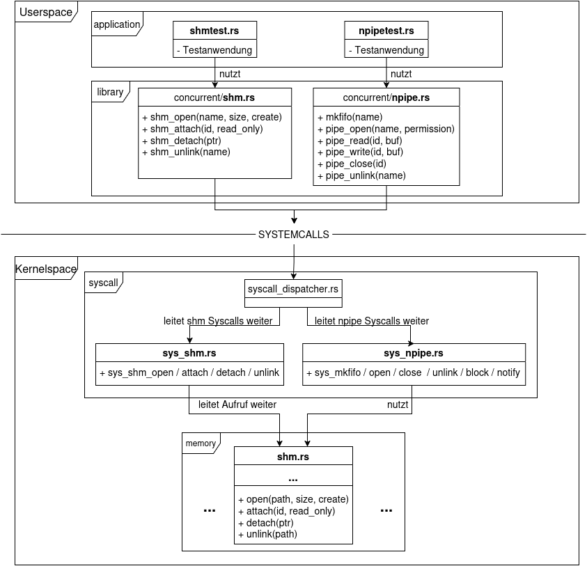

Über die Arbeit
In meiner Bachelorarbeit am Lehrstuhl für Betriebssysteme der Heinrich-Heine-Universität Düsseldorf habe ich das D3OS um eine Interprozesskommunikation (IPC) erweitert.
Problemstellung:
Bisheriger Datentransfer zwischen Adressräumen verlief ausschließlich über den Kernel. Um dem Mikrokernel-Prinzip von D3OS gerecht zu werden, sollte die Kommunikation direkt in den Userspace verlagert werden.
Da Prozesse durch isolierte virtuelle Adressräume strikt voneinander getrennt sind, ist ein direkter Datenaustausch im Userspace standardmäßig nicht möglich.
Zielsetzung:
Konzeption und Implementierung eines Shared-Memory-Systems, das es Prozessen erlaubt, denselben physischen Speicherbereich in mehrere Adressräume einzublenden.
Daten sind so ohne Kernel-Umweg sofort für alle Beteiligten sichtbar. Da geteilter Speicher selber noch keine synchronisierten Zugriffe bietet, wurde zusätzlich eine Named-Pipe entwickelt,
welche auf dem Shared-Memory-System basiert.
Quellcode
Die Implementierung des Shared-Memory-Systems können Sie im offiziellen D3OS Repository einsehen.
Die Named-Pipe wurde noch nicht gemerged.
Systemintegration (Architektur)

Abbildung: Integration des Shared-Memory-Moduls in die Kernel-Architektur
Technische Schwerpunkte
- • Verwaltung physischer Speicherseiten
- • Page-Table-Mapping
- • Umgang mit geteiltem Zustand durch Locks
- • Ringpuffer-Implementierung
- • Low-Level- / Kernel-Entwicklung
- • Verständnis für virtuelle Adressraumisolation und IPC
- • System-V und POSIX Shared-Memory
- • Rust Ownership-Modell und Unsafe-Rust